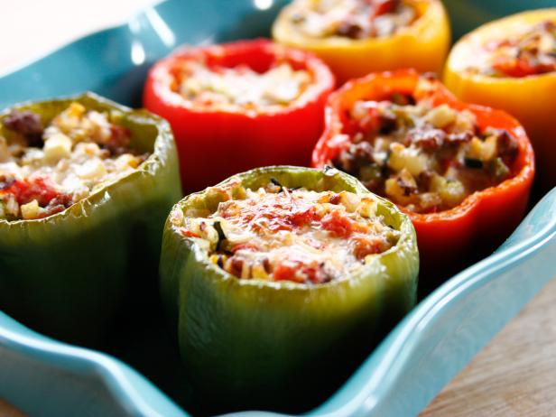

Stuffed Bell Peppers

Description
Stuffed peppers is a dish common in many cuisines. It consists of hollowed or halved peppers filled with any of a
variety of fillings, often including meat, vegetables, cheese, rice, or sauce. The dish is usually assembled by
filling the cavities of the peppers and then cooking.
Ingredients
- 6 bell peppers, any colors
- 4 tablespoons olive oil
- 8 oz lean ground beef
- Kosher salt and black pepper
- 1 onion, finely diced
- 2 cloves garlic, chopped
- ...and other things
Steps
- Preheat the oven to 350 degrees F.
- Cut the tops off the peppers. Remove and discard the stems, then finely chop the tops; set aside. Scoop out
the seeds and as much of the membrane as you can. Place the peppers cut-side up in a baking dish just large
enough to hold them upright.
- Heat 2 tablespoons of the olive oil in a large skillet over medium-high heat. Add the beef, season with salt
and pepper and cook, breaking up the lumps, until the meat is cooked through and just beginning to brown, 8
to 10 minutes. Remove to a paper towel-lined plate to get rid of the fat.
- Wipe out the skillet and add the remaining 2 tablespoons olive oil. Add the onions and chopped peppers and
cook until beginning to soften, 3 to 4 minutes. Add the garlic and zucchini and cook for another minute. Add
the tomatoes and season with salt and a pinch or 2 of red pepper flakes. Cook until everything is heated
through, then stir in the beef and rice. Taste and adjust the seasoning. Stir in 1 cup of the cheese.
- Fill the peppers with the rice mixture and top each with a sprinkle of the remaining 1/2 cup cheese. Pour a
small amount of water into the bottom of the baking dish and drizzle the peppers with a little olive oil.
Cover with foil and bake for 30 minutes. Uncover and bake until the peppers are soft and the cheese is
melted and lightly browned, another 15 to 20 minutes.